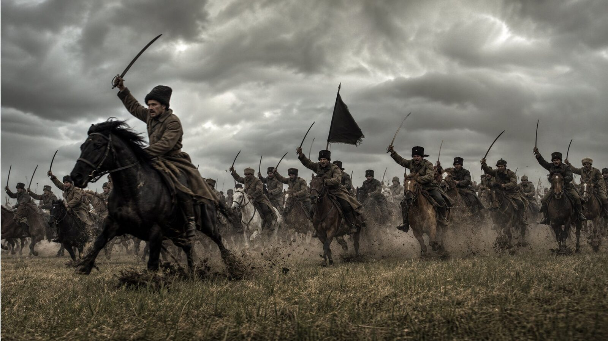
«Анархия есть мать порядка». Альтернативная история, в которой восстание Батьки Махно не погасло в 1921-м, а разгорелось заново — в безгосударственное общество свободных коммун, вольных советов и непобедимой Повстанческой армии.
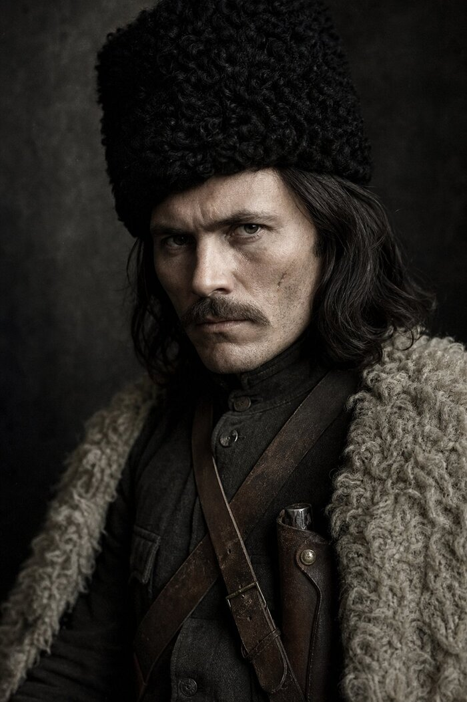
«Гуляйполе: Вольная Территория» (GLP) — глобальная модификация высокого уровня для Hearts of Iron IV, посвящённая одному из самых ярких эпизодов Гражданской войны — махновскому движению. Игрок возглавляет Вольную Территорию и Революционную Повстанческую Армию Гуляйполя (РПА) в 1936 году и ведёт её сквозь Вторую мировую.
Это не «ещё одна страна»: мод пересобирает геймплей вокруг фирменной асимметрии махновщины — тачанки, партизанская война, трофейная экономика, вольные советы и федерация без государства. Вместо классического блицкрига — степная манёвренная война, глубокие кавалерийские рейды и подпольная сеть в тылу врага.
Вся графика — портреты исторических командиров, экраны загрузки, новостная лента в духе газет 1930-х — выдержана в едином сепийно-угольном стиле: архивная фотография, ожившая на экране.
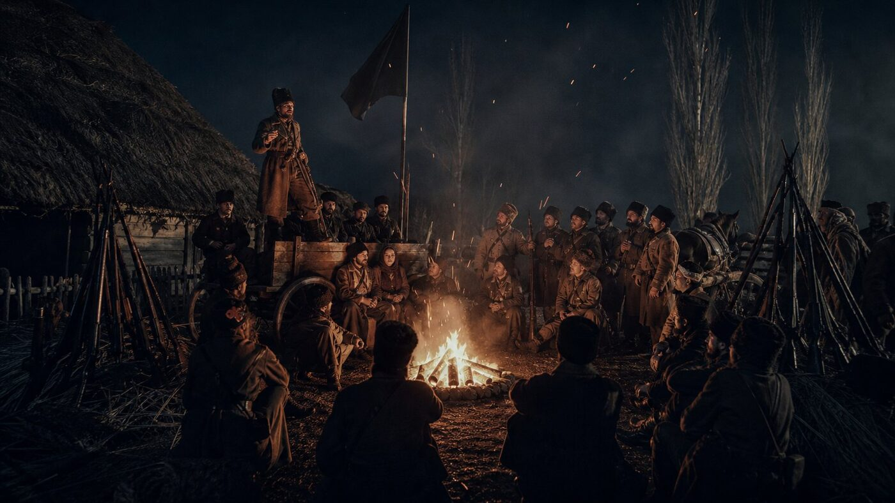
Точка расхождения с реальной историей — 1936 год. Всё, что было раньше, — подлинная история махновщины.
В Гуляйполе Нестор Махно поднимает крестьянское восстание. РПА бьёт австро-германских оккупантов, гетманцев, белых и красных, провозглашает безвластные коммуны и вольные советы. Легендарные тачанки — пулемётные повозки — становятся символом степной войны. В 1921 году после разгрома Махно с остатками отряда уходит за границу.
Париж, гаражи и типографии, анархистские кружки и недописанные мемуары. Но в сёлах Приазовья, в шахтах Донбасса и в казармах память о «батьке» не угасает — ждут только искры.
Мир на пороге новой большой войны, и степи Гуляйполя снова загораются. Делегаты сотен коммун, шахт и полков Черной Гвардии провозглашают Федерацию Вольных Советов. Всякая государственная власть объявлена вне закона, земля — в общее пользование, заводы — фабричным комитетам. Батько возвращается.
Куда поведёт Вольную Территорию игрок: к союзу с СССР, Германией или Британией — или по пути «Вольному воля», собирая под чёрное знамя добровольцев со всего мира? К судьбе свободных коммун — или к мировой революции и Черному Интернационалу?
Каждая система — от фокусов до 3D-моделей — заточена под асимметричный стиль махновщины и выверена по балансу.
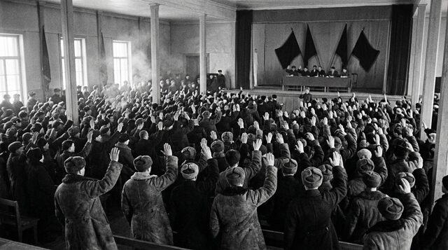
Военная доктрина и партизанская война, индустриализация и вольные советы, контрразведка, дипломатические союзы, аграрные реформы, Черноморский флот, воздушные силы степи, культурная революция, казачья традиция и мировая революция. Все иконки — тематические, без DLC-зависимостей.
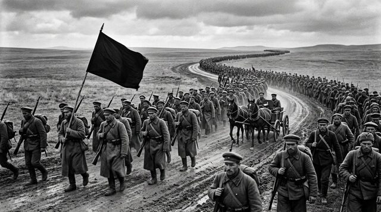
Пятнадцать тематических категорий иконок (военные, промышленные, кавалерийские, разведывательные, медицинские и др.) с настоящей прозрачностью. Экономика, стабильность, военная мощь и боевой дух настраиваются динамически — без мёртвых модификаторов.
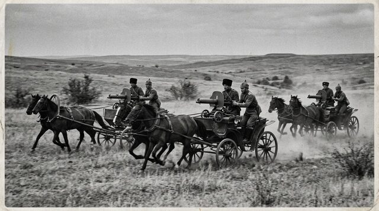
Фирменная махновская механика: пулемётные тачанки, глубокие конные рейды, засады в балках, подпольные ячейки и партизанская доктрина. Бонусы кавалерии и рейдов сочетаются со штрафами снабжения вдали от коренных земель — честная асимметрия.
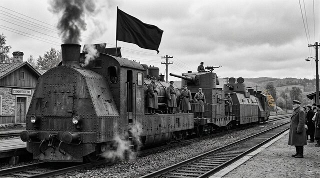
После каждой победы в бою армия подбирает трофеи: стрелковое вооружение, мототехнику, танки и артиллерию. При достатке резервов и снаряжения на контролируемой земле формируется новая дивизия «Трофейный отряд РПА» с ремонтной ротой — война кормит войну.
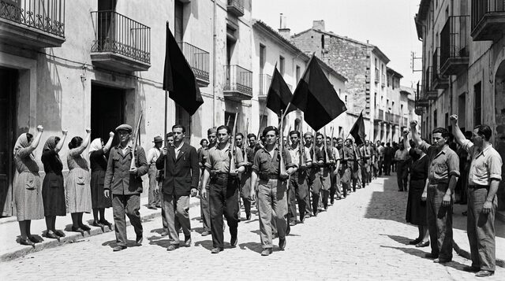
Военные операции и ополчение, инициативы вольных синдикатов, крестьянское снабжение, контрразведка и порядок, примирение с прошлым. От мобилизации резервов Черной Гвардии до отправки бригады анархистам Испании.
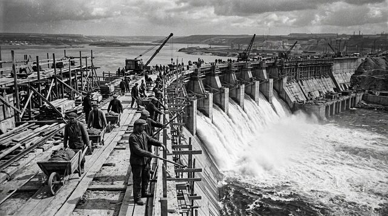
События и новости в духе передовиц 1930-х: «Легендарные тачанки выходят в степь», «IV съезд вольных крестьян и рабочих», «Образование Черного Интернационала» — с расширенным широкоформатным окном и тёмным газетным фоном.
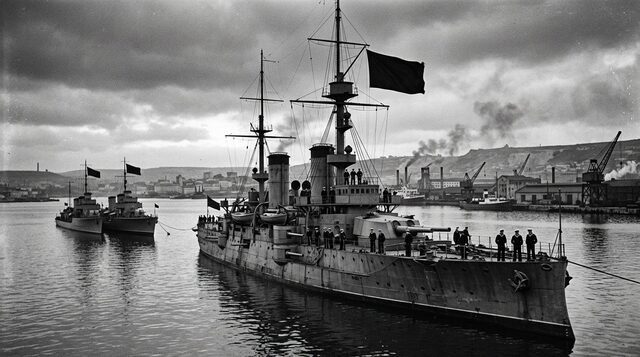
Военный союз с СССР (глубокая операция), с Германией (прусская выучка), с Британией (морская выучка) — либо независимая линия «Вольному воля»: под чёрное знамя стекаются добровольцы со всего мира. Каждая миссия — со своими советниками и бонусами.
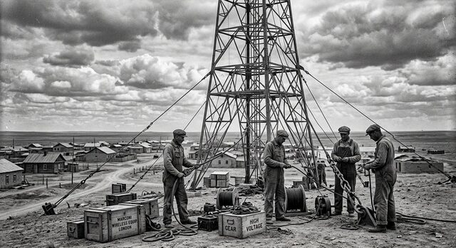
Широкоформатное окно новостей, тёмный газетный фон, шесть авторских экранов загрузки с цитатами Прудона, Бакунина, Кропоткина и Махно, шрифт с кириллицей и кастомная карточка мода для лаунчера.
Пехота РПА использует модель матроса, кавалерия и казаки — всадников в чёрных папахах с шашками (материалы Rise of Russia, подключены как tag-specific сущности). Войска на карте выглядят как настоящие махновцы.
Музыка группы «Монгол Шуудан» в меню и на карте, полная локализация на русском и английском (UTF-8 BOM), а также встроенные подсказки загрузки с авторскими цитатами анархистов.
Шестнадцать собственных командиров и советников — от Белаша и Каретника до Вдовиченко и Марченко — плюс три союзные военные миссии и три белых эмигранта, нанимаемых фокусом. У каждого — свой портрет, биография и боевые черты.
Собственный букмарк, стартовый OOB из четырёх кавалерийских и семи стрелковых дивизий, автобронетанковый полк «Гроза Степей», технологии, национальные духи и фокус-дерево — всё настроено для немедленного погружения.
Исторические личности махновского движения — с фотореалистичными портретами эпохи, выдержанными в единой сепийно-зернистой манере.
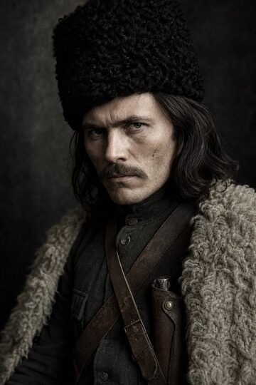
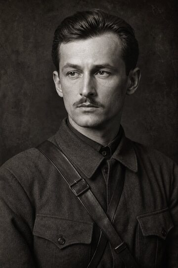
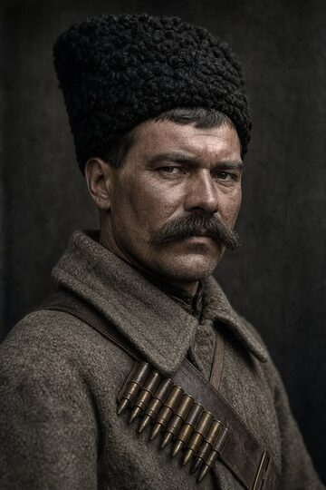
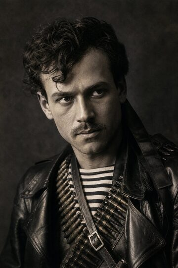
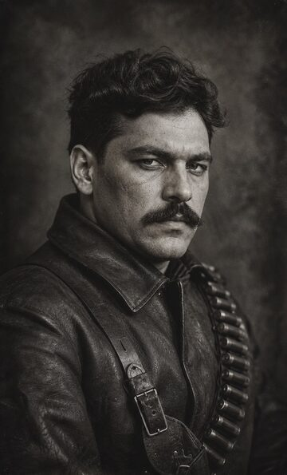
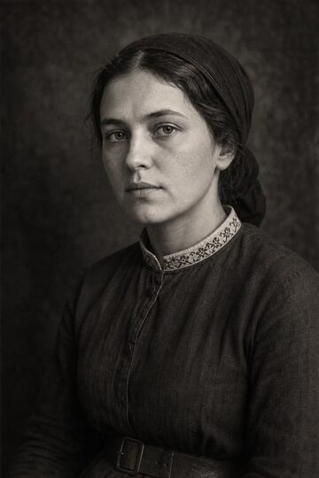
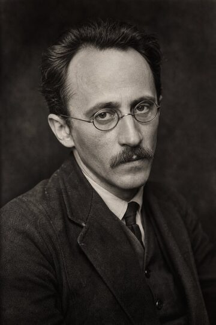
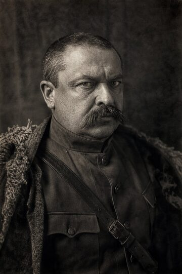
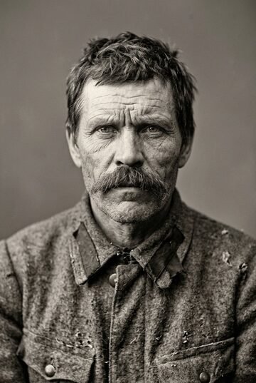
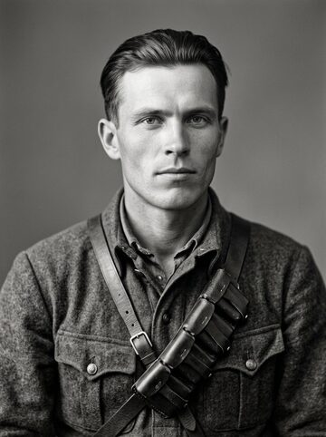
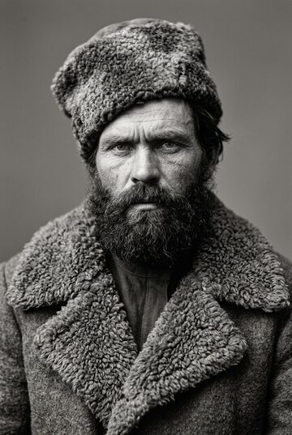
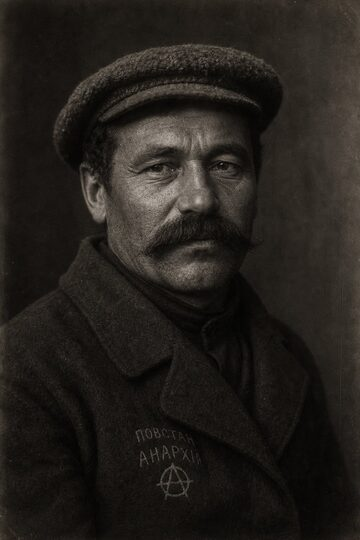
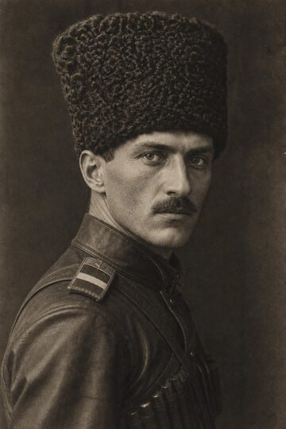
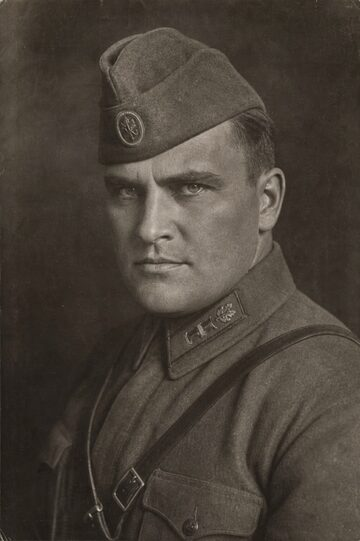
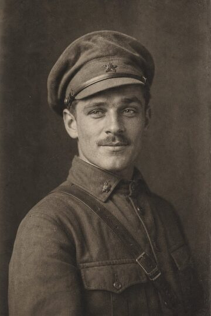
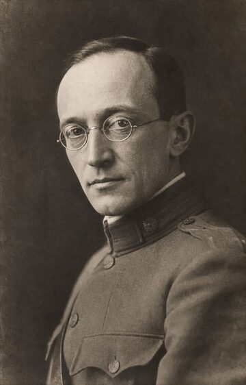
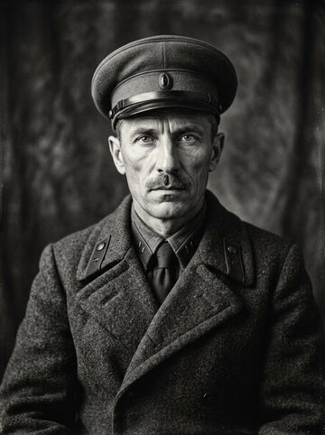
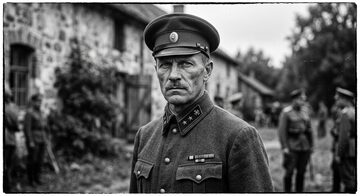
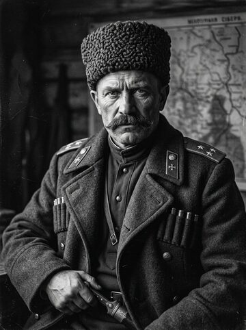
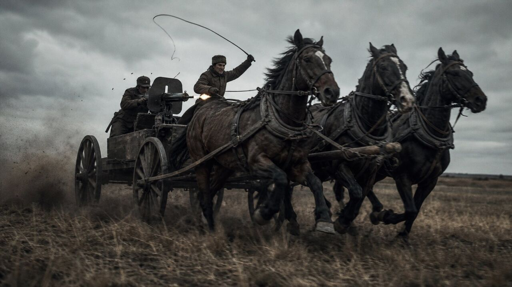
Тачанки в степи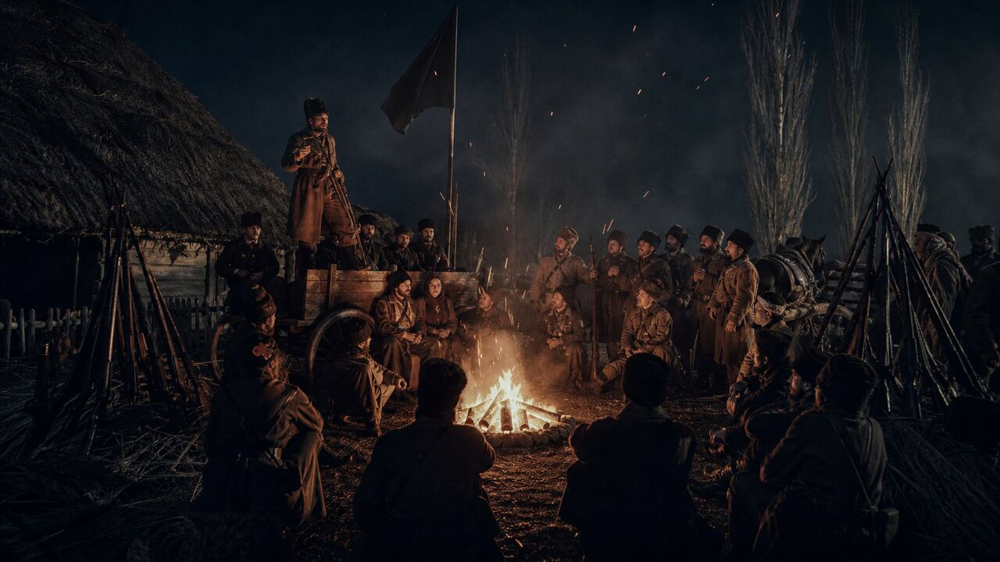
Совет в лагере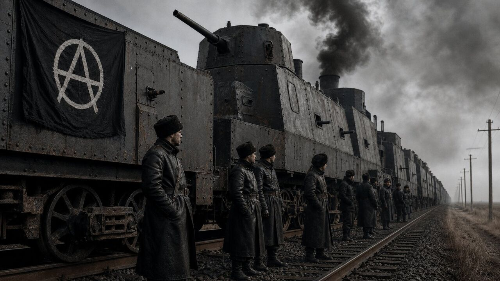
Бронепоезд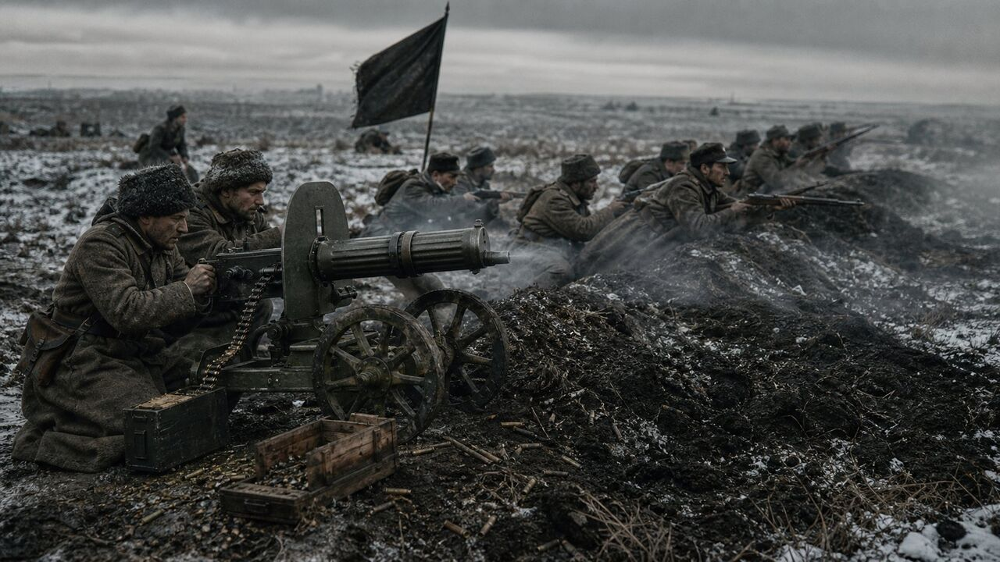
Пулемётная линия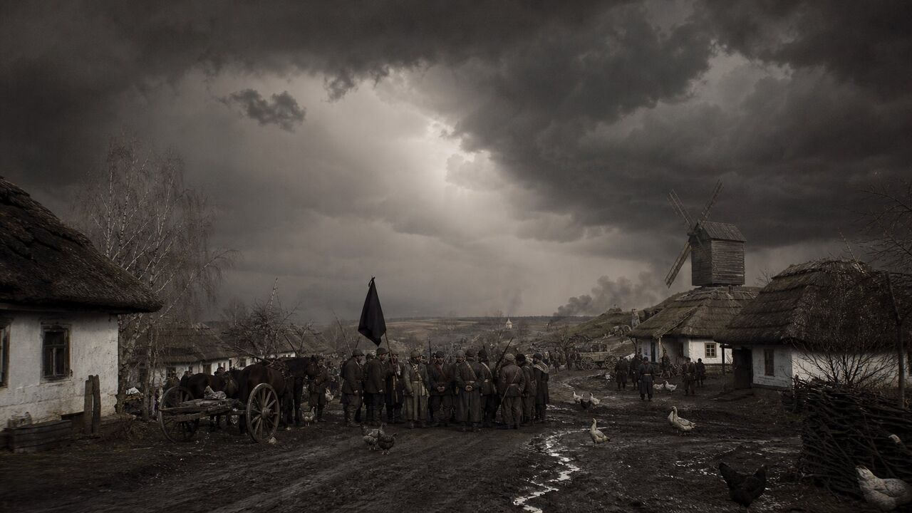
Штурм селаHearts of Iron IV версии 1.19.* и дополнение La Résistance — оно добавляет идеологию «анархизм», без которой мод не загрузится.
Распакуйте папку мода в Documents/Paradox Interactive/Hearts of Iron IV/mod/ вместе с GLP.mod (или подпишитесь в Steam Workshop).
Отметьте «Гуляйполе: Вольная Территория» в списке модов лаунчера Paradox и создайте плейсет.
Выберите сценарий «Надвигающаяся буря», страну Гуляйполе — и ведите Вольную Территорию к свободе или мировой революции.
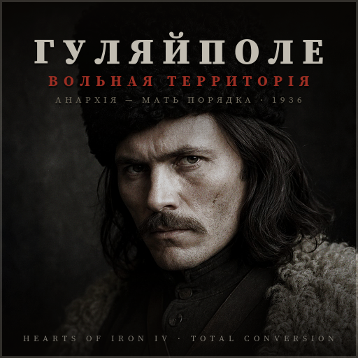
Карточка мода для лаунчера Paradox (thumbnail.png, 512×512)